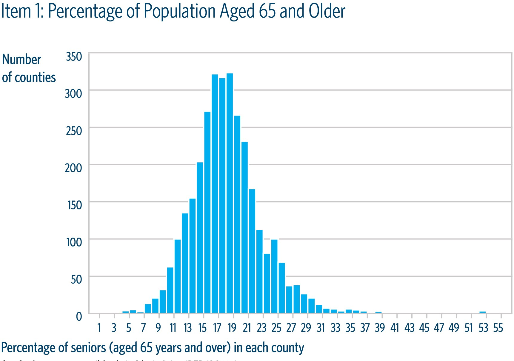
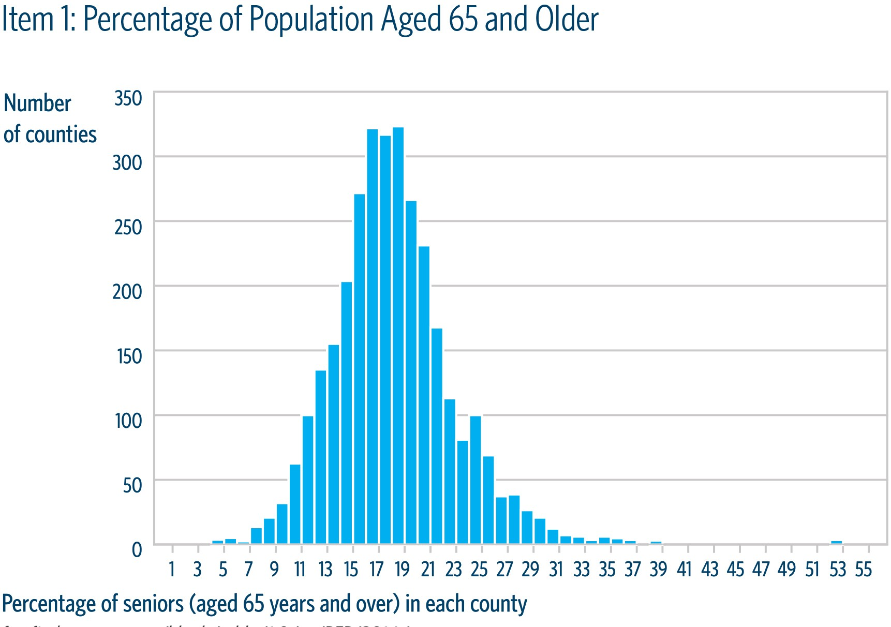
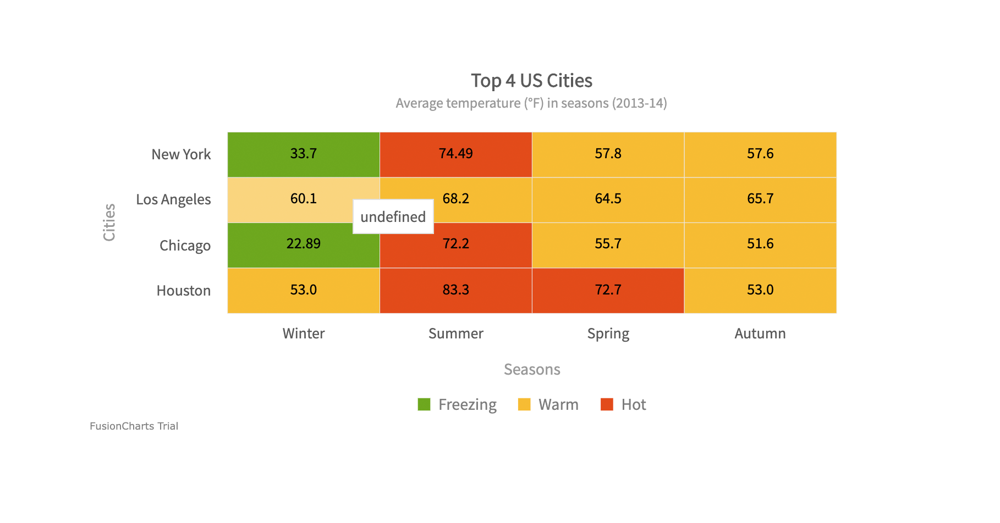
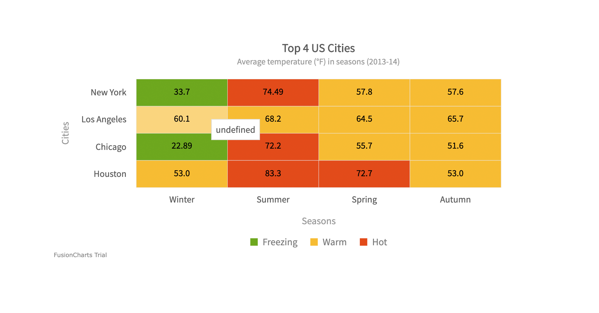

PYTHON
Analyse de données avec Pandas et Visualisation avec Matplotlib/SeabornProjet 1: Nettoyage de données avec Pandas
Objectif du projet :
Ce projet a pour objectif de transformer un jeu de données brut en un dataset propre, cohérent et exploitable.
-
Principales étapes:
- Détection et suppression des doublons et des valeurs manquantes.
- Standardisation des types de données (conversion de dates, uniformisation des chaînes de caractères).
- Gestion des valeurs aberrantes et remplissage conditionnel des champs nuls.
- Nettoyage logique et homogénéisation des colonnes pour faciliter les analyses statistiques.
- Manipulation de données avec Pandas (dropna(), fillna(), astype(), duplicated()).
- Mise en place d’un pipeline de nettoyage automatisé et reproductible.
- Préparation des données pour l’analyse exploratoire.
- Calculs statistiques descriptifs (moyenne, médiane, écart-type).
- Identification des corrélations entre variables via corr() et visualisations croisées.
- Détection de valeurs extrêmes et d’anomalies.
- Analyse de la distribution des données par catégorie et par groupe. Compétences démontrées:
- Analyse exploratoire avancée avec Pandas et NumPy.
- Synthèse statistique et interprétation des indicateurs.
- Préparation à la modélisation ou à la visualisation.
- Création de graphiques (bar, hist, box, scatter, line) directement depuis Pandas et Matplotlib.
- Mise en valeur des tendances clés (évolution temporelle, comparaison par catégorie).
- Personnalisation des visualisations (titres, couleurs, légendes, axes).
- Construction d’un rapport visuel pour synthétiser les résultats de l’analyse exploratoire. Compétences démontrées:
- Utilisation de Pandas et Matplotlib pour la visualisation.
- Data storytelling et communication claire des résultats analytiques.
- Capacité à traduire des insights en graphiques pertinents et lisibles.
Accéder au code du projet sur Github
Projet 2: Exploration et compréhension des données avec Pandas : détection de tendances et corrélations clés
Objectif du projet :
Ce projet vise à comprendre la structure et la signification d’un jeu de données à travers l’analyse exploratoire.
-
Principales réalisations:
Accéder au code du projet sur Github
Projet 3: Visualisation analytique avec Pandas et Matplotlib : storytelling des données
Objectif du projet :
Ce projet met l’accent sur la communication visuelle des données nettoyées et analysées.
-
Principales réalisations:
Accéder au code du projet sur Github
Histogrammes– Distribution des variables numériques
➡ Objectif : observer la répartition (ex. revenus, âges, prix, scores, ventes, etc.)
 
Courbes – Évolution temporelle
➡ Objectif : suivre une tendance dans le temps (ex. ventes mensuelles, trafic, revenu cumulatif)
Heatmap – Corrélation de variables
➡ Objectif : identifier les corrélations fortes/faibles entre plusieurs variables
 
